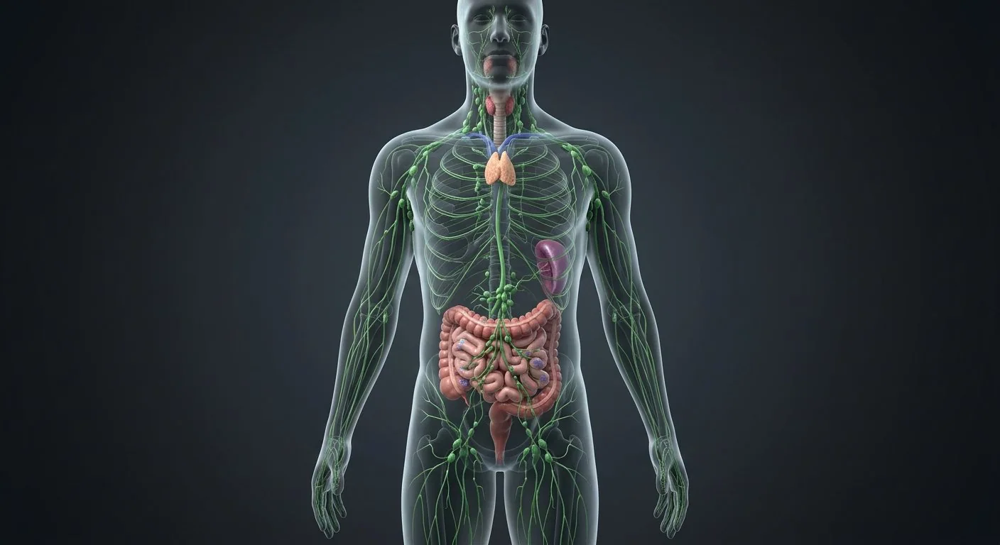

ORGAN → UNDER THE LENS
Lymph node tissue cutaway
Tap to compare the organ region with a tissue-level teaching illustration.
Read about Afferent lymphatic vessels ↓The body's drainage and defence network: interstitial fluid returns as lymph, filtered node by node, while immune cells patrol.

Node groups, trunks and the organs of immunity — with the clinical rule that nodes enlarge downstream of infection and cancer.
These are educational cutaways, not literal magnifications of an organ pixel or laboratory slides. A ring marks the approximate tissue region; part-specific lines appear only where identifiable.
Tap to compare the organ region with a tissue-level teaching illustration.
Read about Afferent lymphatic vessels ↓Tap to compare the organ region with a tissue-level teaching illustration.
Read about Intestinal lacteal ↓These 12 structures describe anatomy related to the chapter’s regional illustration. Each entry separates location, function and a clinical point.
Chains along jugular and spine.
What it doesDrain head and neck.
Clinical connectionRubbery vs hard-fixed distinguishes infection from malignancy.
Five groups in the armpit.
What it doesDrain arm, breast and chest wall.
Clinical connectionSentinel node first receives breast cancer cells.
Horizontal + vertical groups in the groin.
What it doesDrain leg, perineum and lower abdominal wall.
Clinical connectionEnlarge in leg infections and STIs.
Largest lymph channel, cisterna chyli to left venous angle.
What it doesReturns 3/4 of body lymph.
Clinical connectionChylothorax if torn in chest surgery.
Bilobed school for T cells, behind sternum.
What it doesT-cell maturation in childhood.
Clinical connectionThymic hyperplasia accompanies myasthenia gravis.
Largest lymphoid organ, left upper quadrant.
What it doesFilters blood; recycles iron; antibodies.
Clinical connectionSplenectomy → lifelong encapsulated-organism risk.
Lymphoid ring at the oro/nasopharynx.
What it doesFirst-line sampling of inhaled/ingested antigens.
Clinical connectionTonsillitis causes painful swallowing and trismus.
Lymphoid follicles in ileal wall.
What it doesSamples gut antigens.
Clinical connectionTyphoid classically inflames them → perforation risk.
Blind-start capillaries to trunks.
What it doesReturns 3 L of interstitial fluid daily.
Clinical connectionBlockage → lymphoedema (filariasis worldwide).
Sac at L1 collecting lumbar + intestinal trunks.
What it doesOrigin of the thoracic duct.
Clinical connectionVisible on MRI as a thin-walled sac.
Short duct at right venous angle.
What it doesDrains right head, arm and chest.
Clinical connectionInjury is rare but causes right chylothorax.
Capsule, cortex follicles, medulla sinuses.
What it doesFilters lymph; activates B and T cells.
Clinical connectionPainless hard node >2 weeks needs biopsy.
These 8 additional entries give anatomical context. They are deliberately not assigned a photographic pin on the regional image.
Vessels entering lymph-node capsule and subcapsular sinus.
What it doesDeliver tissue lymph for immune filtration.
Clinical connectionObstruction can cause regional swelling.
Lymph-filled space immediately deep to lymph-node capsule.
What it doesDistributes afferent lymph along node surface.
Clinical connectionFirst site encountered by many arriving cells and antigens.
Outer region containing B-cell follicles and germinal centers.
What it doesSupports B-cell activation.
Clinical connectionReactive follicles can enlarge nodes.
T-cell-rich zone between follicles and medulla.
What it doesReceives lymphocytes through high endothelial venules.
Clinical connectionCan expand in cell-mediated immune responses.
Specialized postcapillary venule in node paracortex.
What it doesPermits circulating lymphocytes to enter node.
Clinical connectionDistinct from afferent lymphatic entry.
Cell-rich strands within lymph-node medulla containing plasma cells and macrophages.
What it doesSupport antibody output and immune filtering.
Clinical connectionSeparated by medullary sinuses.
Vessel leaving a node at hilum after lymph traverses sinuses.
What it doesCarries filtered lymph to downstream nodes or ducts.
Clinical connectionFewer efferents than afferents help slow lymph transit.
Blind-ended lymphatic capillary within small-intestinal villus.
What it doesAbsorbs chylomicron-rich dietary lipid.
Clinical connectionFat enters lymph before returning to systemic blood.
Short answers grounded in the structures described above. Use the illustrated guide for anatomical context.
It returns excess interstitial fluid to the bloodstream, transports absorbed fats from the intestine and supports immune surveillance through nodes and lymphoid organs.
Large lymphatic ducts empty near the junctions of the internal jugular and subclavian veins. The thoracic duct drains most of the body.
Chains along jugular and spine. Function: Drain head and neck.
Horizontal + vertical groups in the groin. Function: Drain leg, perineum and lower abdominal wall.
Function: T-cell maturation in childhood. Bilobed school for T cells, behind sternum.
Follow these connected structures and body systems in the illustrated atlas.
 SpleenThe largest lymphoid organ: a blood filter, immune sentinel and red-cell graveyard.↗
SpleenThe largest lymphoid organ: a blood filter, immune sentinel and red-cell graveyard.↗ BreastA modified sweat gland: glandular lobules make milk, ducts carry it, fat gives shape, and lymph drains mostly to the axilla — which is why breast cancer staging checks axillary nodes.↗
BreastA modified sweat gland: glandular lobules make milk, ducts carry it, fat gives shape, and lymph drains mostly to the axilla — which is why breast cancer staging checks axillary nodes.↗ Vascular systemTwo trees from one pump: arteries deliver under pressure, veins return against gravity — with valves, shunts and plexuses throughout.↗
Vascular systemTwo trees from one pump: arteries deliver under pressure, veins return against gravity — with valves, shunts and plexuses throughout.↗General anatomy references and related source chapters for continued study. These links do not make the digital illustrations clinical images or certify every anatomical variant.
This educational page is not medical advice and has not undergone formal clinical peer review. Spotted an error? Contact the editor.
Open the realistic interactive plate, label lines, focus view and self-test.